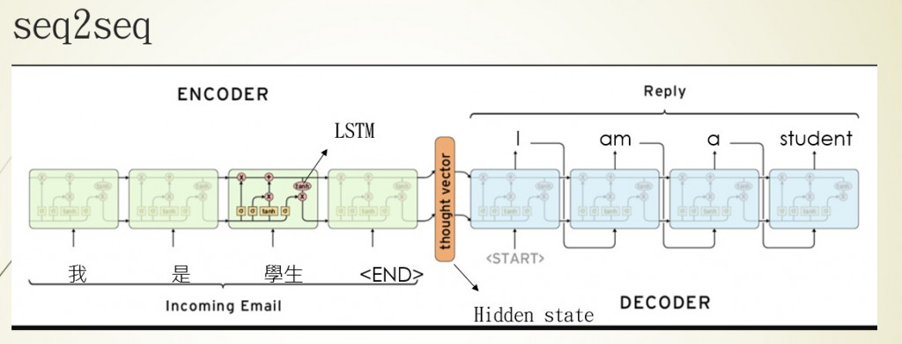
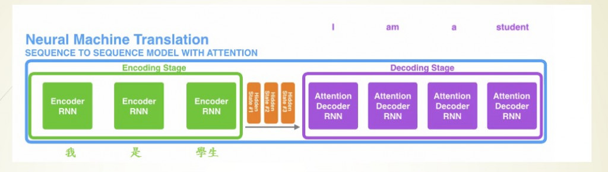
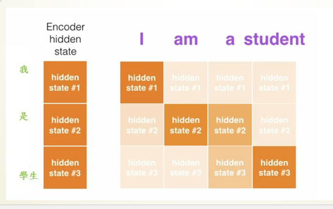
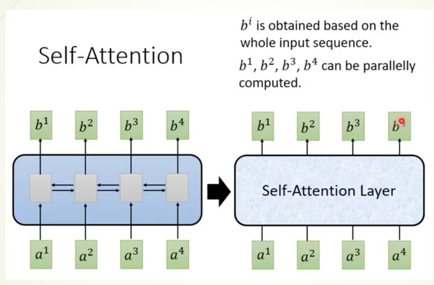
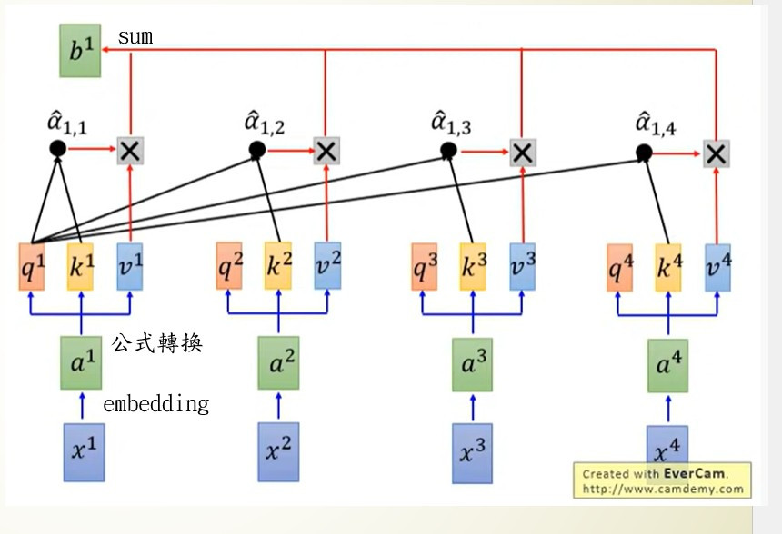
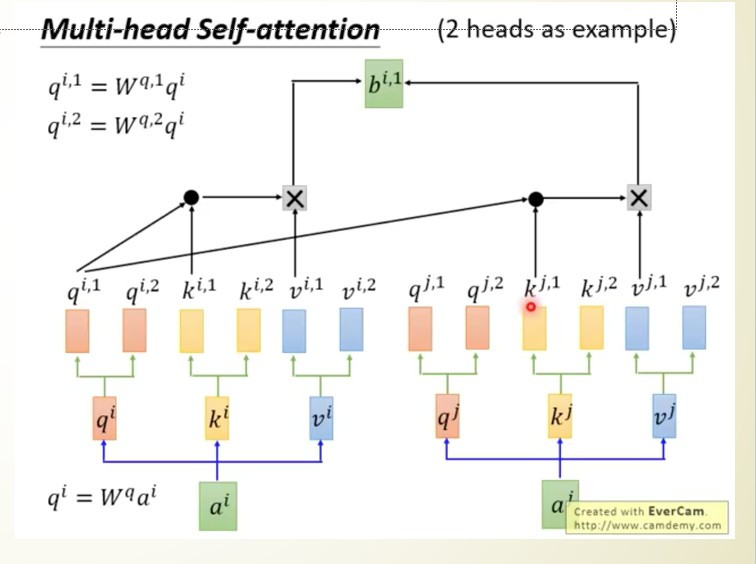

【day16】NLP的首選模型Transformer介紹
發布日期: 2022-09-20 18:30:22
原文連結: https://ithelp.ithome.com.tw/articles/10294494
我們已經在CV(影像辨識)的領域中學習了如何辨識圖像、使用pre-train model以及GAN生成圖像，而我們在NLP中只學會了情緒分析，所以我們這幾天要來學習，如何使用文本的pre-train model與生成文本，於是今天要先來了解電腦是怎麼樣生成文本資料的。
Seq2Seq(Sequence to sequence)

seq2seq是一種encoder-decoder的架構，架構中的encoder與我們在【day9】 讓電腦了解文字資料 & 使用Pytorch做IMDB影評分析的作法是相同的，利用RNN神經網路訓練文本資料，取得最後一個輸出狀態hidden state(Hn或是Yn)，那這個hidden state就會是我們我們電腦了解的文本訊息。
我們在第9天的作法就是將hidden state通過激勵函數sigmoid把狀態縮放至0~1的範圍，之後使用二分法將結果分成正面與負面。但如果不使用激勵函數而是直接使用hidden state呢?這就是decoder的做法，decoder會利用每次RNN神經網路的輸出的hidden state當作模型的輸入，推敲文字之間的關係，找到下一個文字出現的機率，從而完成文本翻譯或是文本生成的任務。
簡單來說seq2seq的技術就是將資料通過encoder產生出hidden state，並且通過decoder解析hidden state所包含的內容，最後來達成文本生成或是翻譯的目的。
不過在seq2seq當中有一個重大的缺陷，還記得我們說過RNN會存在者資料經過計算消失的問題嗎?這一點雖然到LSTM有了些改善，但是還是沒辦法完整的保留資訊，這就會使的decoder所了解的資訊不足導致生成結果不佳。我們舉個例子來幫助理解。
假設有個老師(encoder)在讀書時只自己有用的資料保留下來，那他在教導學生(decoder)時就會把他認為的重點劃出來並且傳達給學生，但是學生連基礎的不好的情況下，卻吸收到了這些過於精簡的知識，導致無法理解老師想要表達什麼，這樣子的考試結果自然會不佳。
這時老師就想到了一個方式，把他在讀書時，學習知識的過程與與學習到知識都跟學生說，讓學生可以從老師讀書的方法中找到一個最佳的解法，而不是只學習重點，這種方式在深度學習中就叫做注意力機制(attention)。

我們先來看加入attention後的seq2seq架構中，hidden state變成了不只一個，因為加入attention後，RNN神經網路會把他所訓練出來的所有結果(H0~Hn)通通交給encoder動態判斷哪一個hidden staete是我要的結果。

傳統RNN的問題
再來就是傳統RNN所產生的問題，不管是LSTM、GRU、simple RNN...等，都有一個相同的問題，就是RNN模型都需等待上一個節點計算完畢後，才能進行下一個節點的運算。若輸入資料維度太龐大，那這個訓練時長，將會比相同維度的CNN網路還要來的更久(LSTM無法平行運算)，所以這時就有一個新的技術叫做transformer。
什麼是Transformer?
Transformer是於2017年由Google Brain團隊推出的一個模型，因計算的速度遠大於LSTM等RNN模型，所以成為了NLP的首選模型。那transformer是怎麼樣運作的呢?首先我們先看到這張圖片

圖片來源:李弘毅老師youtube
在這張圖片中做了一件事情，將原始的RNN神經網路層改成一個自注意力機制(self-attention)層，而這個self-attention的做法就是利用矩陣計算來替代RNN網路，使原本要經過好幾個節的的計算過程，變得可平行運算，且所有輸出都能夠理解所有的輸入，所以接下來就來看看這個self-attention究竟是做了什麼樣的事吧。

首先我們先看到
x1~x4，這一個就是我們輸入的文字，在第9天時有說到高維度的文字需先降維(圖中採用embedding)才能夠交給電腦運算，這個結果就是a1~a4也是我們在self-attention裡實際計算的資料。
我們可以看到a1~a4還分出了3個參數q、k、v。這三個參數是在self-attention中相當重要的資料，我們先來看看這些參數所代表的含意
| 名稱 | 用處 |
|---|---|
| q | 找到輸入的所有k |
| k | 被所有q找到 |
| v | 代表文字本身a |
我們先來看一下圖片中b1的例子，首先會先計算q1·k1到q1·k4來得到結果a(1,1到1,4)，之後用softmax來計算文字之間的分數，最後將a1,1到a4,4與我們的實際輸入v1到v4相乘後加總起來得到最後的輸出結果b1，公式表達是長這個樣子b1=sum(softmax(q1·k1/d^0.5)*v1+softmax(q1·k2/d^0.5)*v2+softmax(q1·k3d^0.5/)*v3+softmax(q1·k4/d^0.5)*v4)，而前面提到v是我們的輸入、sofmax(q1·kn/d^0.5)是每個文字之間的分數，兩個數字相乘就代表這個文字1對文字n的分數，而最後加總的動作就是將文字1(因為是q1)對所有輸入文字的分數，這代表的意思就是的b1就是我們x1~x4之間的文字關係，並且在這個過程中皆採用矩陣平行運算，因此改善了原本RNN計算緩慢的問題，也改善了decoder看不見我們輸入的問題。
但我們原始的self-attention也會產生一種問題就是無法一次注意好幾個文字，我們在看文字時可能會一次關注好幾個相關的資訊，但是在self-attention當中只會找到最相關的，為了改善這個問題，於是衍生了另一種方式多頭注意力機制(Multi-Head Attention)，這種方式非常的簡單就是將q、k、v三個參數分成多個，並且每個q、k、vˋ只會與自己相對編號的q、k、v進行運算。

以圖片中為例qi只會找所有的ki，qj只會找所有的kj，利用這種方法使文字能夠關注到更多的資訊，從而運算出更好的結果。
這樣是不是能了解transformer為何會在NLP中非常重要了呢?不過有沒有發現一件事情transformer中的encoder就是一種特徵擷取的方法，decoder則是一種生成方式，這是不是與我們昨天學習到的GAN非常相似。所以transformer其實不只能運用在NLP當中，也能用在圖像之中，只要是CNN可以做到的事情transformer也能夠做到，所以我認為transformer會是將來AI技術中最閃亮的一項技術。